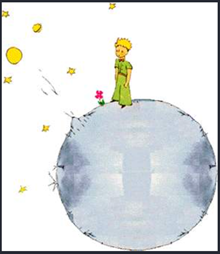

아동문학의 정의
아동문학(Children's Literature)이란 아동과 문학의 합성어로 아동을 위한 문학 책이다. 사전에 의하면, 아동문학이란 작가가 일차적으로 아동에게 읽힐 것을 목적으로 일반문학과 구별되는 특수성을 지니고 있다. 아동문학(兒童文學)은 성인문학과 구별되는 것으로써 주제를 아동과 동심에 두고자 하는 특수한 조건을 충족시켜야 한다.

아동문학문학 중에서 아동의 삶에 가치를 두고 아동을 대상으로 한 전래동화, 창작 동화 등과 아동용 백과사전이나 정보책도 아동문학의 범주에 포함시키고 있다. 역사적으로는 구비전승(口碑傳乘)되어 왔던 신화, 전설, 설화 등이 포함되고, 문학과 창작문학으로는 동화, 동요, 동시, 아동극(희곡) 등도 포함된다.
아동기는 자신의 감정을 말과 글로 표출하는 방법이 어렵기 때문에 신체적, 심리적, 정서적, 사회적 등의 다양한 변화와 관련된 자신감 및 두려움, 죄책감, 부끄러움 등을 문학을 통해서 현실세계에 대한 경험과 이해를 나누며, 더불어 살아가는 공동체적 존재로써 희노애락(喜怒哀樂)까지 느낄 수 있다. 즉, 아동의 삶에 가치있는 모든 내용과 형식을 함유한 교육적 매체이다(김경중, 1990).
석용원(1992)은 아동문학이란 “아동과 동심을 가진 성인을 대상으로 창작한 시, 동화, 희곡 등을 총칭한 것이다.” 고 정의하였다. 아동문학은 우선적으로 아동을 대상으로 동심의 세계를 그리워하거나 동심의 고향으로 돌아가고 싶어하는 모든 연령층에게 매력적인 문학이라는 점이다.
이상현(1987)은 넓은 의미에서 아동문학은 아동의 정서와 심성의 순화에 영향을 미치는 인성의 문학으로 보았고, 좁은 의미로서 아동문학은 작가가 동심을 가졌거나 이를 의식하고 아동이 이해할 수 있는 문장으로 조명하거나 묘사하는 문장으로써 동심을 잃어버린 아동 외의 사람들에게 동심을 주기 위해 쓴 문학이라고 정의하였다.
니콜라에바(Nikolajeva, 1998)는 “아동문학은 탁월한 예술성과 문학성을 갖춤으로써 아동들이 즐거움을 찾을 수 있는 것이다.”고 주장하였다.
이재철(2003)은 아동문학은 아동이나 동심을 가진 성인에게 읽히기 위하여 창작한 모든 저작으로 문학의 본질을 두면서 아동을 위해(목적-대상)， 아동과 함께 갖는(공유)， 아동이 골라 읽어 갈(선택 · 계승) 특수문학이라고 하였다. 또한 아동문학은 인간이 동심의 고향으로 돌아가기 위하여 창조한 문학이며(박민수, 1998), 산문과 운문 소설과 논픽션에 이르기까지 아동들과 관련되는 다양한 주제를 갖는다(Tomlinson & Lynch-Brown. 1996).
이 외에도 아동문학의 정의는 학자마다 차이가 있지만 아동을 위한 문학의 몇 가지 공통된 특성을 지닌다고 볼 수 있다.
아동문학의 정의를 정리하면 다음과 같다(김숙이, 2016).
‧ 아동문학의 대상은 아동이다.
‧ 아동문학은 아동에게 즐거움을 주어야 한다.
‧ 아동문학은 문학으로서의 보편적 특성을 지녀야 한다.
‧ 아동문학은 예술성을 지녀야 한다.
‧ 아동문학은 교육적 속성을 동반해야 한다.
이러한 견해들은 아동문학은 교육적 가치와 즐거움, 심미감이 공존하면서 아동(兒童)의 동심(童心)을 충족시켜 나간다는 점을 언급하였다. 이처럼 아동문학은 아동뿐만 아니라 성인에게도 동심을 주기 위해 쓰인 문학이라고 할 수 있다. 아동문학은 궁극적으로 아동에게 아름다운 정서를 주고 진실을 탐구할 수 있도록 안내하며, 아름다운 꿈과 용기를 줄 수 있다는 특수성을 지닌다. 아동문학은 인간 내면에 있는 진실을 표현하는 것이다(김경중, 2003: 장영희 외, 2015).
아동문학의 조건
아동 발달과 특성에 적합한 문학 작품을 통하여 여러 가지 문제에 지혜롭게 대처함으로써 바람직한 인격을 형성하도록 돕는 목적을 실현할 수 있는 문학적 조건이 중요하다.
① 주제, 소재 등에서의 이상성, 환상성을 갖는 것
② 심미성을 고려한 교육성 내포
③ 형식, 내용면에서의 단순 명쾌성
④ 일반문학과 같은 예술적인 형상화 방법을 거쳐 예술적 인식과 감동을 줄 수 있다.
문학작품 속의 언어는 고도로 함축되고 인간의 참된 모습을 그려내기 때문에 마술처럼 웃기기도 하고, 울리기도 하며, 위로 하고, 희망을 주는 통로 역할을 한다. 아동문학은 세상에 대해 탐색할 기회를 얻게 되고, 지적 호기심과 주변세계에 대한 지식을 넓히게 되고 인간에 대한 다양한 조망능력을 형성하게 된다.
때로는 성인이 아동문학작품을 통해 자신의 유년기 삶을 되돌아보기도 하고, 민담이나 전설, 신화 같은 이야기는 남녀노소 모두 또 다른 삶의 모습을 발견하기 위하여 읽기를 원한다. 서점에 가보면 아동서점 코너에서 성인들이 아동서적을 보며 읽는 모습을 보게 되기도 한다. 부모들은 아동들이 책 속에 있는 내용과 그림이 적합하다고 여긴 책을 고른다. 대형서점 아동문학 코너에 가보면 아동이 좋아하는 디자인， 그림， 내용 등 아동의 마음을 사로잡으려는 독특한 기능이 함유된 다양한 책들이 많이 있다.
아동문학의 특징과 문학적 조건은 다음과 같다(채종옥 외, 2015).
‧ 아동문학의 교육성을 지녀야 한다.
‧ 아동문학의 명쾌성이 조화를 이루어야 한다.
‧ 아동문학은 심리발달 단계를 고려한다.
‧ 아동문학은 생활성이 있는 소재를 다루어야 한다.
‧ 아동문학은 예술성이 포함되어야 한다.
‧ 아동문학은 문학성이 고려되어야 한다.
아동문학은 아동뿐만 아니라 동심의 세계를 그리워하는 어른을 위하여 쓴 특수문학으로써 형식면에서는 문학적, 예술적인 지준으로 설정해야 한다. 내용면에서는 아동의 발달에 유익한 것으로써 즐겨 읽을 수 있는 책이다(김현희 외, 2008).
아동문학을 통해 언어를 이해하고 동요, 동시, 동화를 통해 새로운 어휘를 쉽게 배울 수 있게 된다. 또한 다양한 정서와 감정의 세계를 경험함으로써 즐거움과 상상의 세계에 대한 꿈을 간직하게 된다. 아동문학은 문학 속의 인물들을 통한 정신적 고양을 함으로서 통찰력을 가지게 된다.
이와 같이 아동문학은 아동들이 밝고 긍정적인 삶을 살아가는 데 원천적인 힘을 주며, 다양한 간접경험을 통해 삶을 내면화 할 수 있는 장점이 있다. 아동문학의 창작은 전문적인 동화작가, 소설가, 시인과 아동의 생활의 경험을 부모나 교사도 할 수 있다. 아동문학의 대상, 가치, 욕구, 교육성, 예술성 등을 기초로 한 문학작품이라는 점에서 일반문학의 보편적인 특성을 지닌다. 그렇지만 그 주체를 아동과 동심에 둔다는 점에서 일반문학과 다른 특수한 의미를 지닌다.
아동문학의 목표
아동문학의 궁극적인 목표는 육체적, 정신적, 사회적으로 미성숙한 아동을 건전한 사회적 인간으로 성장하기 위한 교육적 측면을 강조한 것이다. 다시 말하면 교사나 부모들은 아동문학을 교육적 목적으로 권장하기 때문에 아동문학은 교육적인 동시에 문학적이어야 한다.
아동문학의 중요성은 다음과 같다(황은순 외, 2017).
‧ 아동의 삶에 대한 태도와 의미를 심어준다.
‧ 아동에게 생태학적 환경을 이해할 수 있도록 도와준다.
‧ 아동의 상상력이 세련될 수 있도록 도와준다.
‧ 아동에게 긍정적 독서태도와 관심을 갖도록 한다.
‧ 아동에게 미적 감수성을 기르도록 돕는다.
아동문학의 주 대상의 연령을 살펴보면 우리나라 아동복지법에서는 아동을 18세 미만으로 규정하고, 영유아보육법에서는 6세 미만의 미취학 영유아를 대상으로 하고 있다. 교육기본법에서는 의무교육을 받는 15세 미만으로 하고, 실종아동 보호 및 지원법에서는 만14세 미만을 아동으로 분류하고 있다(김이영 외, 2017). 아동은 연령별 내적 능력의 발현이 양육자에 의해 큰 영향을 받은 시기로써 감각적이고 자아중심적인 사고가 강한 특성을 지니고 있다.
이와 같은 정의를 참고로 아동기는 발달 특성의 차이가 매우 크다는 점을 고려할 때 아동문학 대상을 청소년을 포함한다는 것은 다소 무리가 따른다. 영아기와 유아기, 초등학기를 위한 그림책이 대량으로 출판되어 보급되면서 연령상 한계를 가진다.
따라서 아동문학은 다양한 장르의 문학적 총체로써 아동을 위한 문학， 아동에게 적합한 문학， 아동에게 필요한 문학 등 아동문학을 정의하는 데 있어서 인지적 발달 및 특수성을 고려해야 할 것이다.
2022.01.11 - [분류 전체보기] - 문학과 아동문학의 의의 - 인간의 보편적인 윤리와 가치
문학과 아동문학의 의의 - 인간의 보편적인 윤리와 가치
아동 문학의 의의 인간은 책을 통해 과거의 역사와 인간의 삶을 알게 되고, 새로운 정보나 지식, 정서 등 직･간접적으로 습득할 수 있다. 문학이란 작가가 인간의 세계를 그린 작품이다. 문학은
think-sis.tistory.com